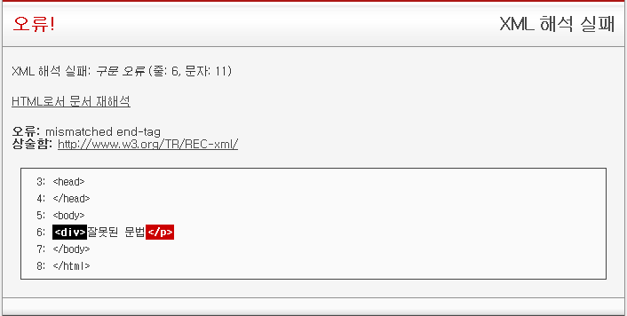

예전에 CDATA는 운이 좋으면 해석될 뿐..이라는 글을 읽고서는, 나도 같은 문제로 고민한 적이 있어서 정리해 둬야 겠다 싶어서 글을 쓴다.
XHTML은 그 자체로 완전히 유효한 XML이어야 한다.
XML은 CDATA 섹션(<![CDATA[ ~ ]]>)이라는 것을 지원하는데, 이 영역 안에 들어갈 경우에는 <,>, & 기호 같은 특수문자들이 자동으로 <, >, &로 변환되는 것이라고 보면 된다.
일반적으로 <script>태그 안에 다음과 같이 사용한다.
<!DOCTYPE html PUBLIC "-//W3C//DTD XHTML 1.0 Transitional//EN" "http://www.w3.org/TR/xhtml1/DTD/xhtml1-transitional.dtd">
<html lang="ko-KR" xml:lang="ko-KR" xmlns="http://www.w3.org/1999/xhtml">
<head>
<script type="text/javascript">
//<![CDATA[
alert("안녕~~ </script>야!");
//]]>
</script>
</head>
<body>
<p>
xhtml content-type test
</p>
</body>
</html>
CDATA의 시작과 끝 부분에 자바스크립트 주석인 // 를 넣는 것은 CDATA 섹션을 이해하지 못하는 브라우져에서 에러발생을 막기 위해서이다. 하위 호환성 확보를 위한 행동인 것이다.
위에서 alert 문자열안에 있는 </script>는 CDATA 섹션 안에 있기 때문에 태그로 해석되지 않고, 순수하게 문자열 데이터로서만 해석이 된다. 따라서 아무 오류 없이 그냥 "안녕~~ </script>야!"만 화면에 출력되어야 한다.
그럼 위 코드는 제대로 작동할까?
상황에 따라 다르다.
FireFox,Opera,Safari 등에서는 파일의 확장자를 .xhtml로 저장하면 XHTML로 간주해서 작동하고, .html로 저장하면 제대로 작동하지 않는다. 확장자가 .xhtml 이어야 정확한 XHTML 이라고 간주하고 XML 문법 검사를 하는 것이다.
IE는 어떨까? IE는 현재(4,5,6,7, 8 beta) 어떠한 경우에도 정확한 XHTML을 지원하지 않는다. xhtml 문법을 지킨 문서를 파싱은 잘하긴 하지만 완전히 유효한 XML 기반의 XHTML로 해석하지는 않고 있다.
즉, XHTML을 파싱해서 화면에 보여주는데는 문제가 없지만, XML 관련 문법을 지원하지 않기 때문에 XML 문법 영역에 속하는 CDATA 섹션을 무시한다. 따라서 위 HTML은 alert 중간의 </script> 태그에서 Javascript가 영역이 끝났다고 간주해 버리기 때문에 Javascritp 문법 오류가 발생하게 된다.
그렇다면, XHTML을 정확히 지원하는 브라우저를 사용할 경우에 확장자를 항상 xhtml로 해야만 하는 것일까?
물론 그건 아니다, HTTP 응답 헤더의 Content-Type을 application/xhtml+xml 로 지정하면 항상 XHTML로 간주한다.
이걸 해 주지 않으면 평소에는 컨텐트 타입을 "text/html"로 해석한다. IE의 경우에는 application/xhtml+xml로 지정하면 알 수 없는 타입으로 간주하고 다운로드하려고 든다. HTML 해석기는 작동하지 않는다.
응답 내용을 application/xhtml+xml 로 지정할 경우 장점이 하나 더 있는데 자동으로 브라우져가 XML 유효성 검사를 해준다.
JSP에서는 다음과 같이 지정한다.
<%@page contentType="application/xhtml+xml; charset=utf-8" %>
따라서 태그를 문법에 잘 맞게 썼는지를 W3C Validator를 돌려 볼 필요도 없이 개발 도중에 즉시 확인이 가능해지는 것이다.
아래는 Opera에서 "<div>잘못된 문법</p>" 라고 잘못된 문법을 사용한 페이지를 XHTML 형식으로 봤을 때 자동 유효성 검사 해준 화면이다. XHTML을 지원하는 모든 브라우져가 이러한 유효성 검사를 다 해준다.

그렇다면, FireFox,Opera,Safari 일 경우에는 컨텐트 타입을 application/xhtml+xml로 지정하고 IE일 경우에는 text/html 로 지정하면 좋을 것 같다.그렇게 하려면 브라우저가 보내는 헤더에서 Accept 값을 검사해서 그 값 중에 application/xhtml+xml 이 있는지 확인해 보면 된다. 그게 있으면 컨텐트 타입을 XHTML로 지정하고 없으면 text/html로 지정한다.
다음은 내가 사용한 FireFox 3.0, Opera 9.5, Safari 3.1, IE 7 의 Accept 헤더 값이다.
FireFox 3.0 Accept : text/html,application/xhtml+xml,application/xml;q=0.9,*/*;q=0.8
Opera 9.5 Accept : text/html,application/xhtml+xml,application/xml;q=0.9,*/*;q=0.8
Safari 3.1 Accept : text/xml,application/xml,application/xhtml+xml,text/html;q=0.9,text/plain;q=0.8,image/png,*/*;q=0.5
IE 7 Accept : */*
관련해서는 http://www.w3.org/2003/01/xhtml-mimetype/content-negotiation을 참조하면 된다. 이런 것을 Content Negotiation 이라고 한다.
이렇게 XHTML이냐 HTML 이냐에 따라 Content-Type 을 구분해 준다고 해서 문제가 해결 되지는 않는다.
컨텐트 타입이 text/html이든 application/xhtml+xml 이건 위의 script 태그 내용이 다음과 같이 바뀌어야 할 것 같이 보인다. HTML문법에서도 < > 등은 XML에서와 마찬가지로 <,> 로 자동 변환되기 때문이다. 그러므로 이론상으로는 아래 문법은 xhtml과 html 모두에서 정상 작동해야 할 것 같다.
<script type="text/javascript">
alert("안녕~~ </script>야!");
</script>
그런데... 문제는 그렇게 간단하지 않았다. XHTML로 해석할 경우에는 FireFox,Opera,Safari 모두 위 문서를 정확히 의도한 바대로 "안녕~~ </script>야!!" 라고 출력했다. 하지만 컨텐트 타입을 html 로 지정하면 모든 브라우저가 다 아래와 같이 출력했다.
위 문제에 대한 간단한 해결책이 있는데, 다음과 같다.
//<![CDATA[이렇게 하면 컨텐트 타입에 무관하게 잘 작동한다. 즉, 태그로 인식될만한 문자열이 안나오게 하면 된다. 하지만... 딱 봐도 무지하게 짜증나는 짓이다.
alert("안녕~~ <" + "/script>야!!");
//]>
이런 짜증나기 짝이 없는 일관성 없는 해석 행위 때문에, 컨텐트 네고시에이션이 무용지물이 되어 버린다.
컨텐트 네고시에이션을 의미있게 하면서 이런 문제를 없애려면, 내가 보기에 해결책은 하나다...
HTML 문서 안에 <script> 태그를 넣지 않는 것이다!
그래야 컨텐트 타입에 무관하게 해석 가능한 일관성 있는 HTML 작성이 가능해 지는 것이다. CDATA 섹션이고 뭐고 아무 의미 없다는 것이다.
아니면, 절대로 확신이 있는 script 만 써야 한다. 동적으로 <script></script> 내용이 채워질 경우에는 숫자나 엘리먼트 ID 같은 <,>,& 등의 문자가 절대로 올 수 없는 내용만 동적으로 들어가는 것을 보장한 상태로 작성해야 하는 것이다.
내가 내고 싶은 진짜 결론은 사실 이거다..
"IE 짜증나!!"